本章学习目标（Objectives）
- 理解线程、线程组与 Dispatch；
- 读写结构化缓冲（StructuredBuffer / RWStructuredBuffer）；
- 掌握 SV_GroupID / SV_GroupThreadID / SV_DispatchThreadID；
- Append/Consume 缓冲、组内共享内存与同步；
- 实战：波动模拟与高斯模糊。
计算着色器（CS）脱离渲染管线，把 GPU 当通用并行计算机用——图形后处理、物理、AI 推理都在用它。
13.1 线程与线程组（Threads and Thread Groups）
CS 以线程组为单位调度：CPU 调 Dispatch(gx, gy, gz) 启动 gx×gy×gz 个组，每组内 numthreads(nx, ny, nz) 声明的线程并行执行。比如 3×2 个组、每组 8×8 线程 = 共 384 个线程。一个 Warp（硬件层 32 线程）内的线程"锁步"执行——因此组内线程数取 8×8、16×16 这类 32 的倍数最合适。
13.2 一个简单的计算着色器（A Simple Compute Shader）
// 向量加法：c[i] = a[i] + b[i] StructuredBuffer<float> gInA : register(t0); StructuredBuffer<float> gInB : register(t0-1); RWStructuredBuffer<float> gOut : register(u0); [numthreads(32, 1, 1)] void CS(int3 dtid : SV_DispatchThreadID) { gOut[dtid.x] = gInA[dtid.x] + gInB[dtid.x]; }
SRV 只读（t）、UAV 可读写（u）。程序化思想：每个线程"认领"一个数据下标，互相独立地算。
13.3 数据输入输出资源（Data Input and Output Resources）
默认堆上创建 Buffer/Texture2D，用 SRV（读）与 UAV（读写）两种视图绑定。注意：UAV 并发冲突——同一 UAV 同一时刻不能既作为输入又作为输出被写。CPU↔GPU 之间用上传/读回缓冲搬运数据。
13.4 线程 ID 系统值（Thread Identification System Values）
- SV_GroupThreadID：我在组内的坐标（0~numthreads-1）；
- SV_GroupID：我在 Dispatch 网格里的组坐标；
- SV_GroupIndex：组内一维编号（展平）；
- SV_DispatchThreadID：全局线程坐标 = GroupID×numthreads + GroupThreadID——99% 的场合你只需要它。
13.5 Append 与 Consume 缓冲
特殊 UAV 类型：ConsumeStructuredBuffer 用 Consume() 弹出一个元素，AppendStructuredBuffer 用 Append(x) 压入——内部自动维护原子计数，天然适合"筛选/过滤"场景（活着的粒子 → 新列表）。
13.6 共享内存与同步（Shared Memory and Synchronization）
每组有 32KB 级的 组内共享内存（groupshared），速度堪比缓存。用 GroupMemoryBarrierWithGroupSync() 保证组内所有线程写完再读。书中警告：跨组无法同步，需要全局同步就再 Dispatch 一次；UAV 之间还要 Barrier（UAVBarrier）。
13.7 Blur 演示（高斯模糊实战）
思路：高斯权重 G(x, σ) 对半径 R 内的像素加权平均。直接 2D 模糊是 R² 次采样，拆成横一遍 + 纵一遍两个 1D pass 只需 2R 次（可分离滤波）。难点是线程组边缘要读组外 texel——技巧：组内线程先协作把"组范围 + 半径"的纹理区段搬进共享内存，同步后再算，让读共享内存替代读全局纹理。书中逐图讲解这一经典优化。
本章小结
- Dispatch(组网格) → numthreads(组内线程)；SV_DispatchThreadID 定位数据。
- StructuredBuffer(t) 读、RWStructuredBuffer(u) 写；Append/Consume 做队列。
- groupshared + 组内 barrier = 组内协作；跨组靠再 Dispatch。
- 可分离滤波（横+纵）+ 共享内存搬运 = 教科书级 CS 优化案例。
🖼️ 原书插图（15 张，点击展开）
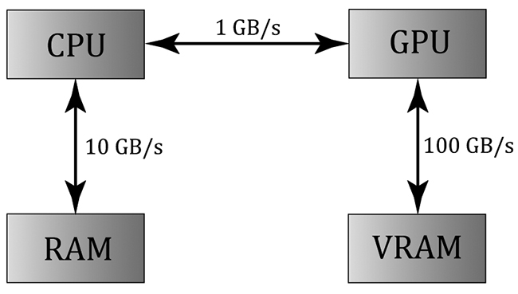
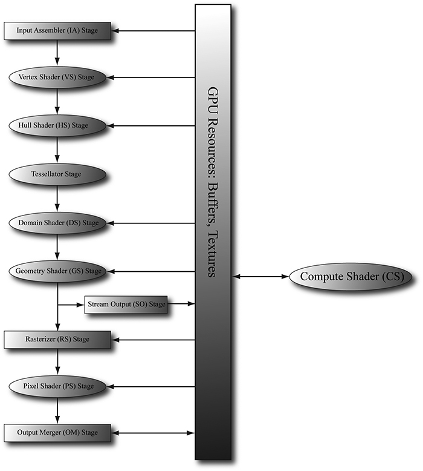
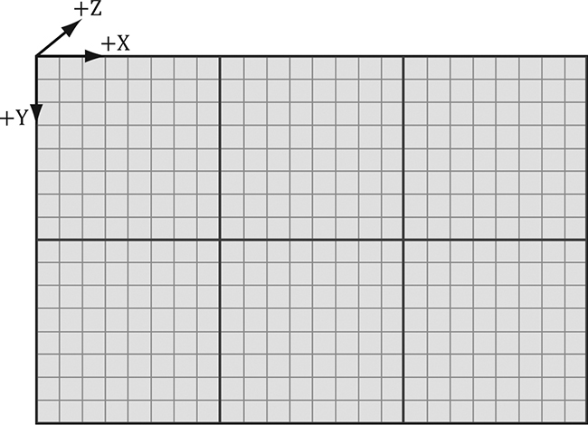
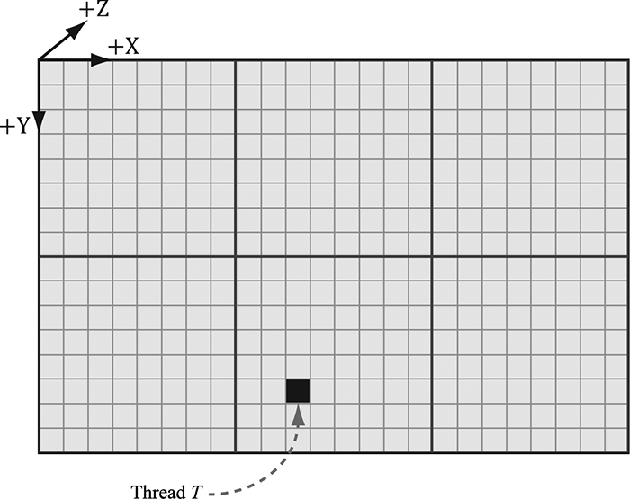
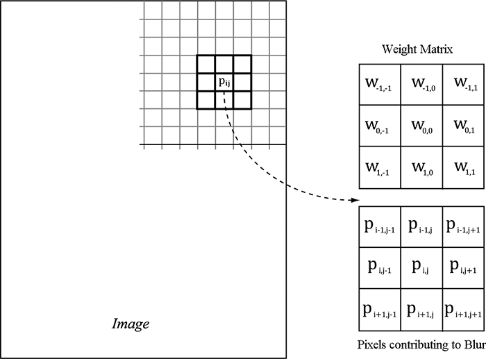
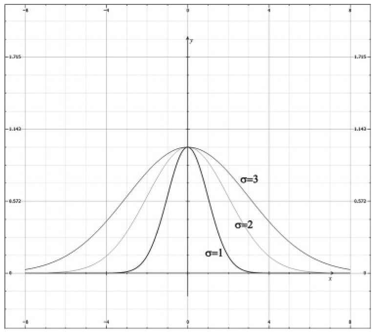
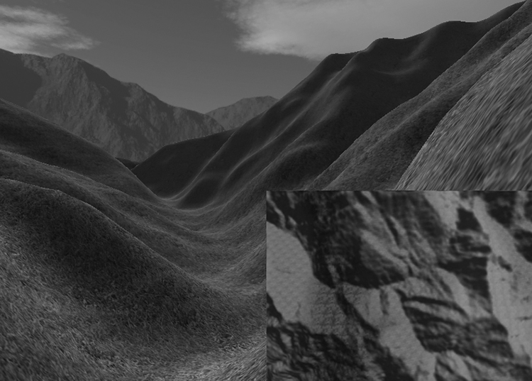
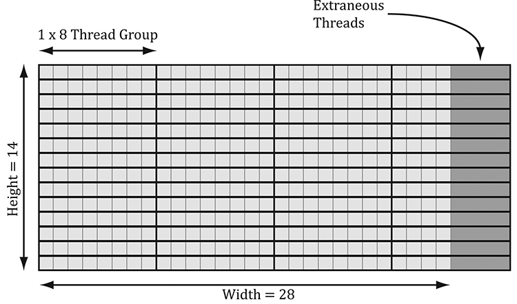
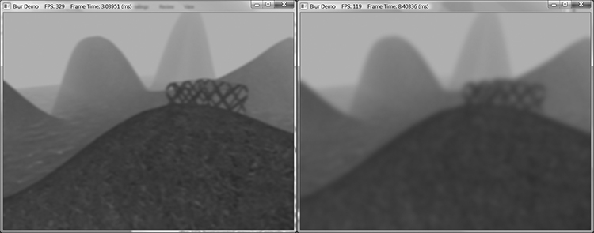
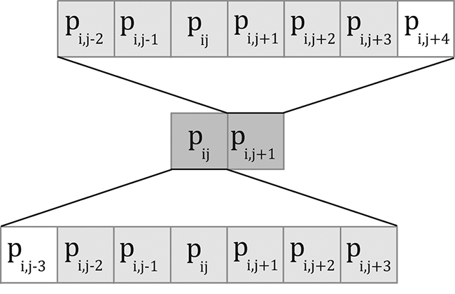
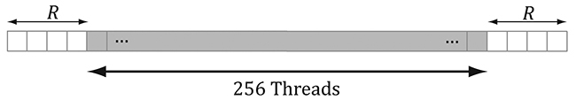
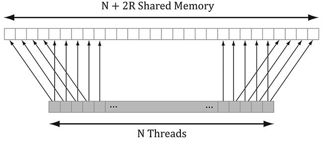
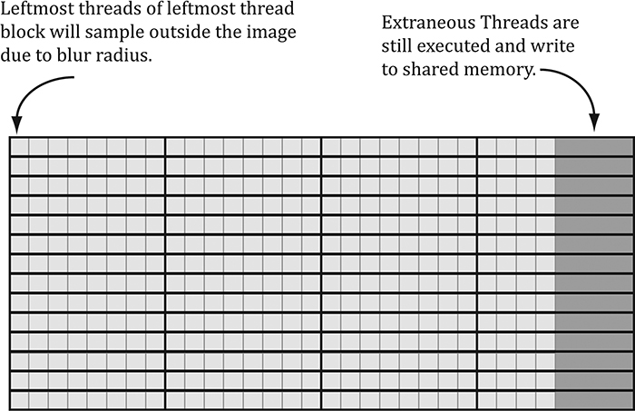
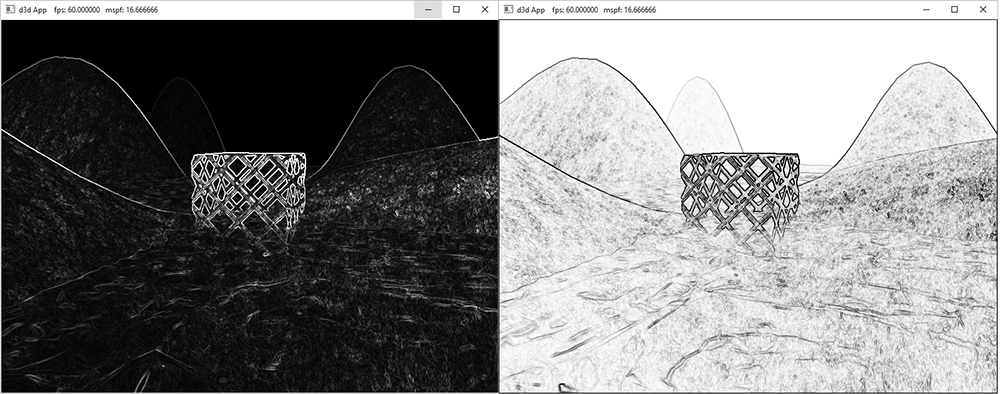
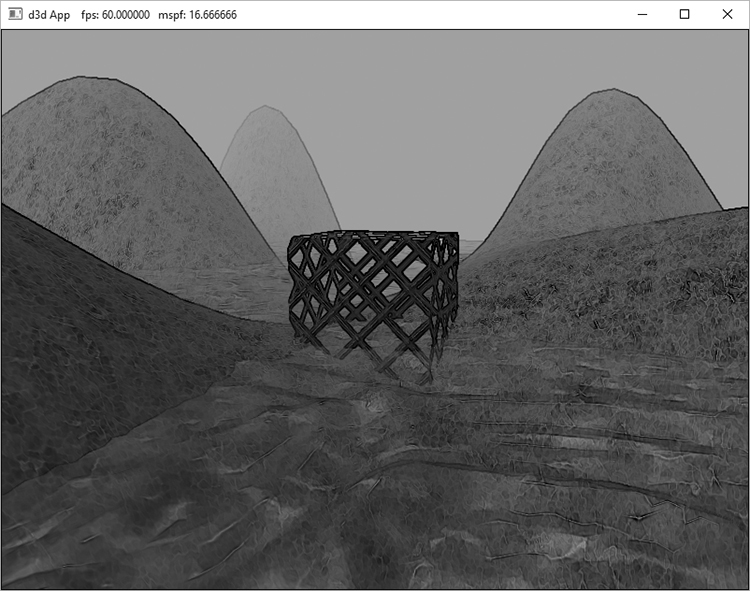